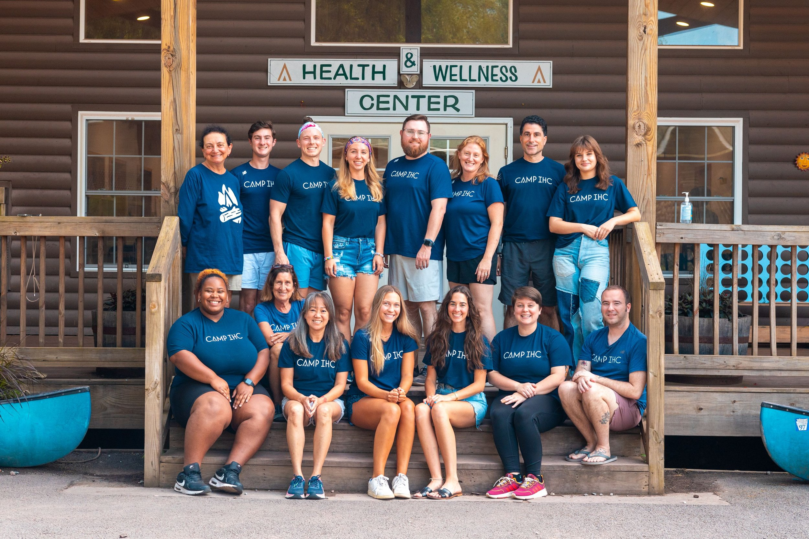

At Camp Ahanu, your child's health and safety are our top priorities. Our friendly camp nurses and medical staff are always available to help them feel their best - whether it's a scraped knee, a tummy ache, or just needing a little extra care.
The Nurse's Station is open every day and staffed with trained professionals who are here to support you. We also work closely with parents and guardians to make sure we're aware of any special medical needs, medications, or allergies before camp begins.
Need to visit the nurse? No problem - just let your counselor know, and they'll help you get there. We're here to make sure you stay happy, healthy, and ready for all the adventures Camp Ahanu has to offer!
If you take daily medications, our medical team will help manage and distribute them safely. And of course, we're always ready for any unexpected boo-boos, bug bites, or band-aid emergencies.
